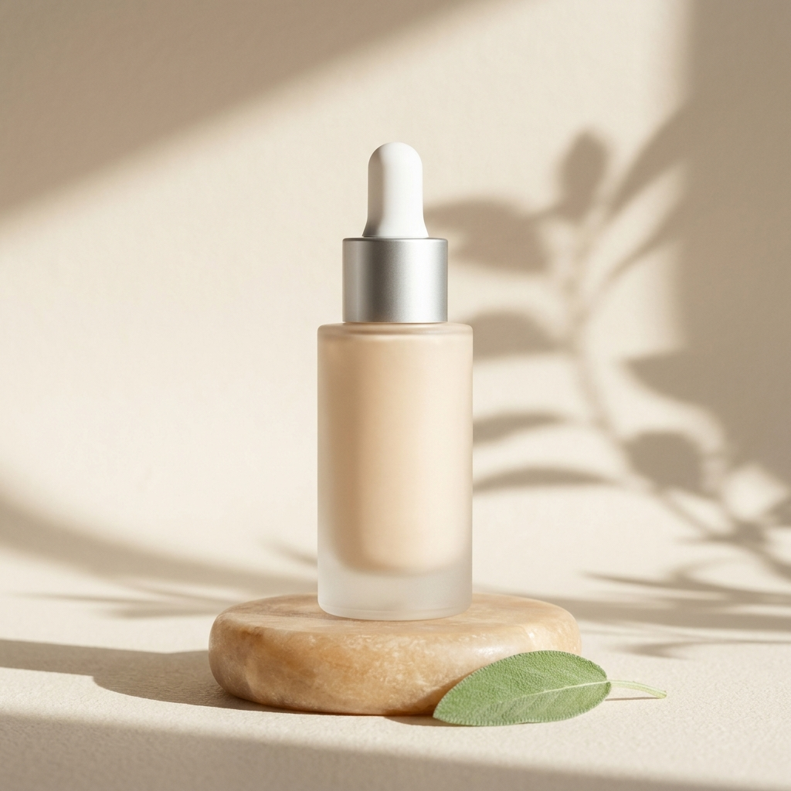

NARS Cosmetics Radiant Creamy Kapatıcı içerik analizi
Yüz · Kapatıcı · ₺₺₺
Vegan mı? Kaynağı Kontrol Et. Gliserin bileşenleri hem bitkisel hem hayvansal üretilebilir; ambalajda Vegan logosu arayın.
Sağlıklı mı? Bazı hassasiyet yapabilecek veya orta riskli içerikler barındırıyor.
Kremsi dokulu, orta-yüksek kapatıcılıklı ve ışıltılı bitişli ikonik kapatıcı. Silikonlar, parabenler ve koruyucu sistem nedeniyle hassas gözlerde dikkat gerektirir.
Cilt tipi: En uygun cilt tipleri: Kuru, Hassas, Karma, Normal
Marka: NARS Cosmetics — Karma (Karmin İçerebilir).
Uygulamada detaylı analizi aç →Satın al
Amazon.com.tr Trendyol HepsiburadaDikkat edilmesi gerekenler
- AB'de oran sınırı olan madde: Cyclopentasiloxane, Titanium Dioxide, Methylparaben, Phenoxyethanol
- Bitkisel de hayvansal da olabilir: Glycerin
- Çevreye zararlı / kalıcı: Cyclopentasiloxane
İçindekiler (INCI) — 11 bileşen
- Aqua — Saf Su (Güvenli)
- Cyclopentasiloxane — Siklopentasiloksan (Uçucu Silikon) (Orta risk)
- Dimethicone — Dimetikon (Silikon) (Orta risk)
- Glycerin — Gliserin (Güvenli)
- Titanium Dioxide — Titanyum Dioksit (Güvenli)
- Iron Oxides — Demir Oksitler (Mineral Pigment) (Güvenli)
- Butylene Glycol — Bütilen Glikol (Güvenli)
- Sodium Chloride — Sodyum Klorür (Mineral Tuz) (Güvenli)
- Tocopherol — E Vitamini (Tokoferol) (Güvenli)
- Methylparaben — Metilparaben (Yüksek risk)
- Phenoxyethanol — Fenoksietanol (Orta risk)
Bileşen listesi bilgilendirme amaçlıdır ve üretici formülü zamanla değişebilir; satın almadan önce ambalajdaki güncel listeyi kontrol edin. Bu sayfa tıbbi tavsiye değildir.
Daha temiz alternatifler
- Revolution Beauty Conceal & Define Kapatıcı — skor 89/100
Daha yüksek skor (+25) · %100 Vegan · Parabensiz · Daha az riskli bileşen (1 → 0) · Cruelty-free - Rare Beauty Liquid Touch Aydınlatıcı Kapatıcı — skor 89/100
Daha yüksek skor (+25) · %100 Vegan · Parabensiz · Daha az riskli bileşen (1 → 0) · Cruelty-free - Maybelline New York Instant Anti-Age Eraser Kapatıcı — skor 81/100
Daha yüksek skor (+17) · Parabensiz · Daha az riskli bileşen (1 → 0)
Benzer ürünler
Rare Beauty Liquid Touch Aydınlatıcı Kapatıcı · Fenty Beauty Pro Filt'r Instant Retouch Kapatıcı · Maybelline New York Fit Me! Likit Yüz Kapatıcısı · Revolution Beauty Conceal & Define Kapatıcı